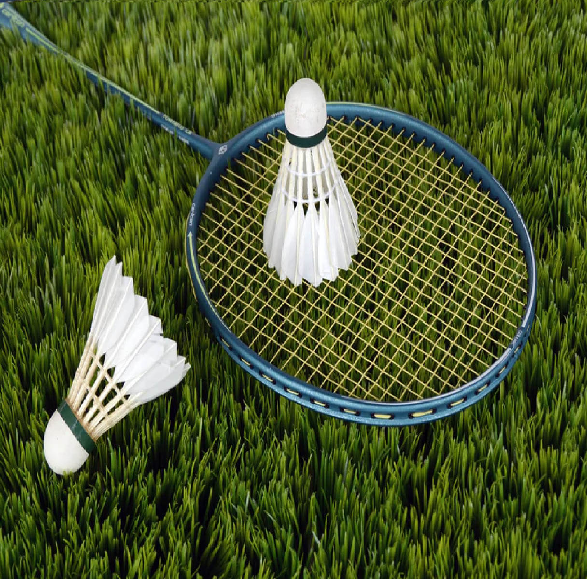
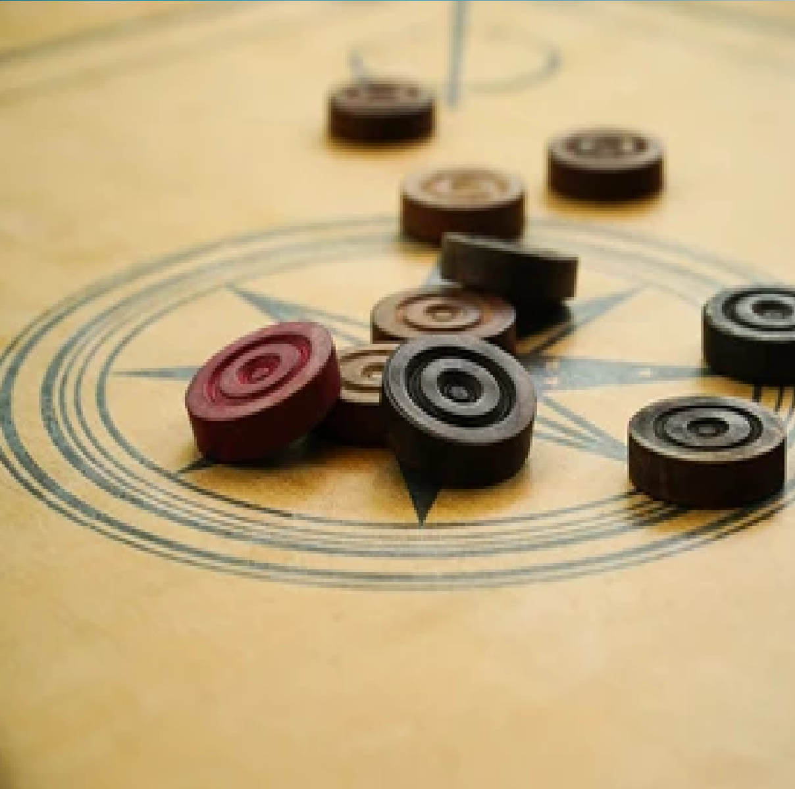
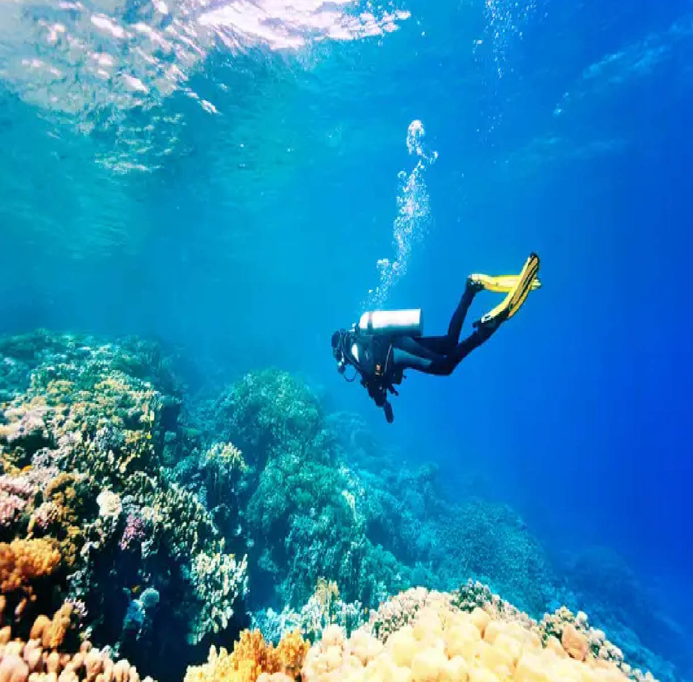
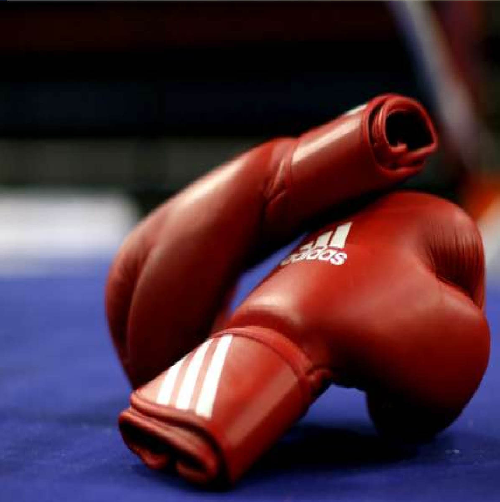
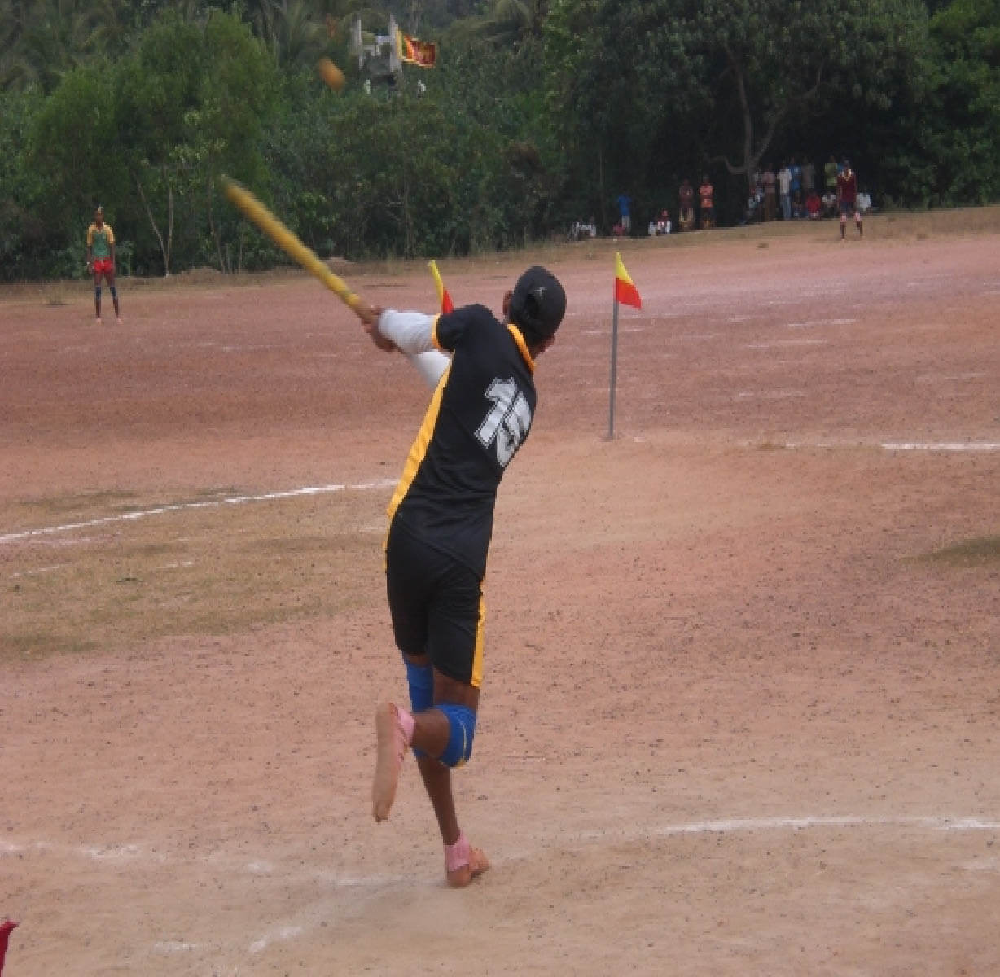

By exposing children to different sports, you can significantly increase the chances of them finding an individual talent or interest. Both the pupil and school will then experience the benefits of their participation in sport.
They also provide an opportunity to build teamwork skills, increase self-confidence, and teach social skills. Undoubtedly, there is a lot of importance of regular physical activity in a person’s life that helps them stay healthy and improve their emotional fitness. That is why having sports and games in the school curriculum is considered a good thought. Including such activities right from childhood is a good idea as it helps them make it a part of their routine.
Royal College offers a wide variety of sports that students can choose as per their interest.
Atheletics
Badminton

Body Building
Carrom
Diving

Air Wing Cadet Contingent
Baseball
Boxing
Chess
Elle

Army Cadet Contingent
Basketball